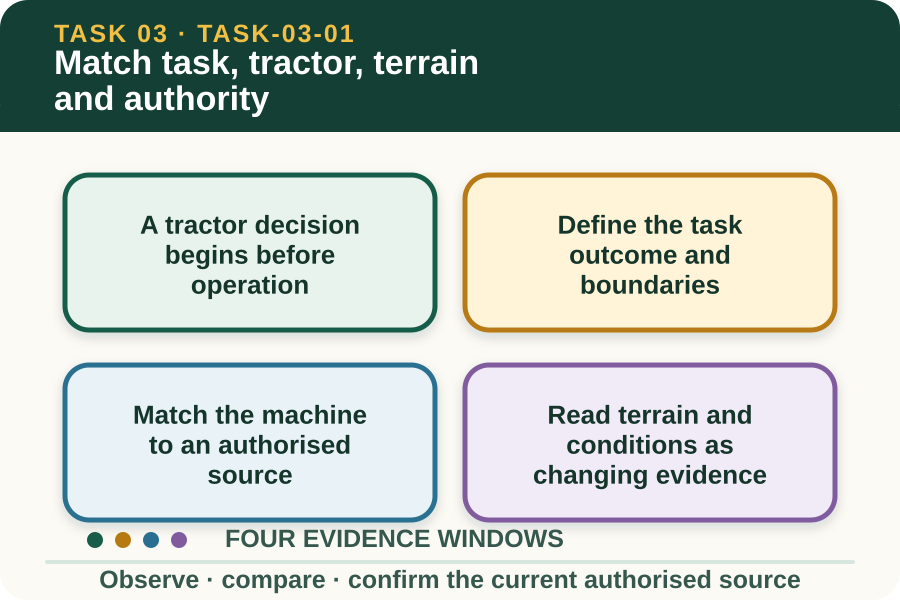
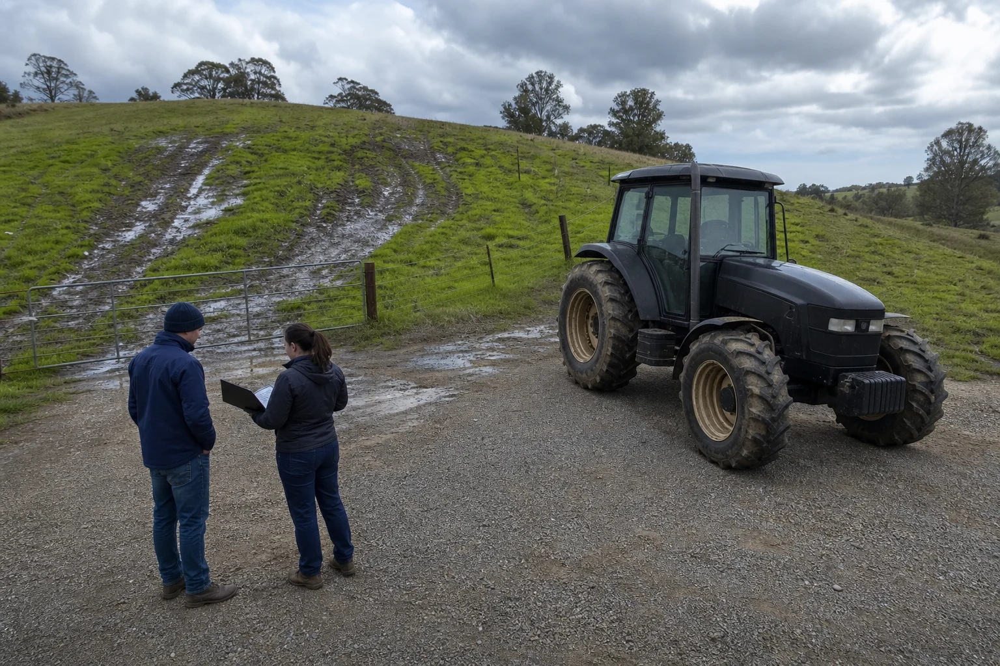

Learning purpose
Decide whether the task, tractor, terrain, conditions and operator authority align.
Task 3 · Lesson 1 of 4
Decide whether the task, tractor, terrain, conditions and operator authority align.
Learning purpose
Decide whether the task, tractor, terrain, conditions and operator authority align.
Success criteria
Learning boundary
Supplementary learning and formative practice only. Current RTO assessment, local procedures and authorised supervision control real work.

Tractor work is an interaction between the job, machine, any equipment, people, terrain and current conditions. A familiar tractor does not make every task or property familiar.
The first learning decision is whether the planned combination has been confirmed by the supervisor and current authorised sources. This module stops at readiness reasoning and does not provide operating instructions.
A clear brief identifies the intended work, location, timing, people involved and the authorised machine and equipment. It also identifies the role of the learner and the supervision expected.
If the job changes, the original confirmation may no longer apply. A different load, location, surface or item of equipment is a decision point for the supervisor, not a detail for the learner to improvise.
The current operator manual, machine identification, workplace procedure and supervisor direction control the machine's capacities and conditions of use. Memory from another tractor or property is not a reliable substitute.
A learner should be able to locate the controlling information and recognise when it is missing, unreadable or inconsistent with the brief. The next action is confirmation, not experimentation.

Terrain includes slope, surface firmness, visibility, edges, obstacles, access width and areas affected by rain or erosion. Conditions also include nearby people, livestock, traffic, weather and work occurring in adjoining areas.
These observations do not produce an operating technique from the website. They help the learner decide whether the planned work still matches the supervisor's confirmed conditions or needs to be paused and reviewed.
Fictional worked example
Observed evidence: A fictional tractor task was confirmed for a level, firm paddock, but overnight rain has left soft ruts near the access point and livestock are now in the adjoining lane. Decision and reason: The task-machine-terrain combination no longer matches the brief. Safe action: The learner stays outside the work area and reports the location, surface change and livestock movement. Result: The supervisor postpones the activity pending an authorised review. Next check or record: The learner records the changed conditions and decision, not an operating solution.
A person may recognise tractor components or have previous experience and still lack current permission, induction or supervision for this machine and property. Confidence does not establish authority.
Training and authorisation must be confirmed through the current workplace process. Completing this theory or choosing correct quiz answers does not permit operation or demonstrate competence.
A readiness summary can classify evidence as confirmed match, visible mismatch or unconfirmed fact. This makes the reason for referral clear without pretending the learner can approve the job.
The summary should name the source checked, observation made and decision required. The supervisor then applies the local procedure, manufacturer information and current work plan.
Formative practice
Each option explains the consequence. These answers save only on this device.
Written application
Apply and keep a learning record
Use a fictional teacher-provided brief and image. Sort evidence into Confirmed match, Mismatch and Unconfirmed, then write a concise supervisor referral. Do not describe how to operate the tractor.
Learning record: A supplementary-learning task-machine-terrain-authority decision table for teacher feedback.
Lesson responses and the activity are formative learning only. Formal sufficiency and competence remain with the current RTO process.
Source basis: AHCMOM202 Release 1 application and preparation requirements, together with SafeWork NSW farm guidance on induction, training, supervision and changing terrain. Current manufacturer instructions, workplace procedures and supervisor directions control all operation.